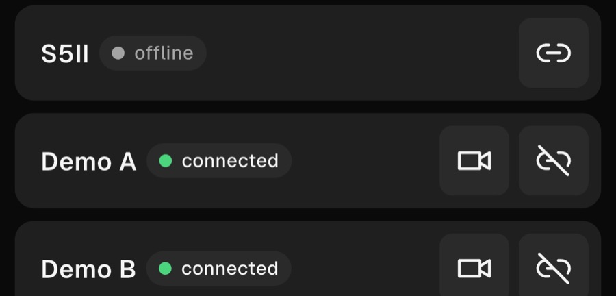
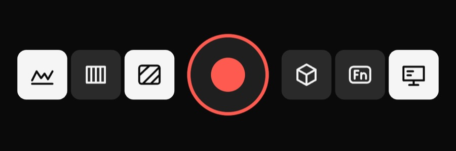

Monitoriza hasta cuatro cámaras LUMIX en tu iPhone o iPad
La imagen en directo de todas las cámaras en una sola cuadrícula, grabación en todas con un solo botón, resaltado de enfoque (focus peaking), falso color, cebra y LUT, a través del propio Wi-Fi de las cámaras, sin necesidad de internet en el rodaje.
Primeros pasos

1. Activa en la cámara la conexión Wi-Fi con un smartphone (en la cámara: Wi-Fi → conexión con smartphone).
2. En la app, toca Añadir cámara. La app busca la cámara por sí sola: en el punto de acceso personal de tu iPhone, en el propio Wi-Fi de la cámara o en un router al que estén conectados los dos.
3. Toca la cámara encontrada. La primera vez, iOS te pide acceso a la red local: permítelo, ya que la app se comunica con las cámaras a través de ella.
4. Algunas cámaras te piden que confirmes la conexión en su pantalla.
Una cámara solo admite un control a la vez. Cierra LUMIX Sync (y cualquier otra app de control remoto) antes de conectarte.
La lista de cámaras
Cada cámara guardada tiene un estado: sin conexión, conectando y conectada. El icono de enlace conecta una cámara; aunque se haya cambiado a otra red, la app vuelve a encontrarla. El icono de cámara abre su imagen y el enlace tachado la desconecta.
Con Editar puedes renombrar cámaras, eliminarlas y cambiar su orden, que es también el orden de los mosaicos en la cuadrícula. Las cámaras guardadas pueden conectarse solas al abrir la app.
La cuadrícula y REC ALL

Todas las cámaras conectadas, una al lado de otra. El botón rojo del centro inicia la grabación en todas las cámaras. Para detenerlas todas, mantenlo pulsado: un toque simple nunca detiene una toma. Una cámara que está grabando muestra REC y el tiempo en su mosaico, y un marco rojo la resalta.
La app nunca detiene una grabación por sí sola: si se corta la conexión, se bloquea el iPhone o la app pasa a segundo plano, las cámaras siguen grabando.
La barra bajo la cuadrícula contiene las superposiciones y cuatro botones Fn que eliges tú. En Pantalla decides qué muestran los mosaicos: nombres de las cámaras, frecuencia de imagen y antigüedad de la imagen, botones de función.
Superposiciones y LUT

El resaltado de enfoque marca los bordes nítidos, el falso color colorea los niveles de exposición y la cebra raya las zonas claras. Cada una puede activarse para todas las cámaras o solo para algunas (la pequeña etiqueta 1/4 indica para cuántas); los colores y los umbrales están en los ajustes de la cámara.
Cada cámara puede mostrar una LUT (.cube) que se aplica antes de las superposiciones; importa las tuyas desde la app Archivos.
Las superposiciones analizan la imagen en directo de la cámara: una vista previa comprimida de lo que muestra la cámara. Úsalas para valorar el enfoque y la exposición, no como instrumento de medición.
Una cámara: enfoque, exposición, zoom

Toca un mosaico para abrir la cámara a pantalla completa. Toca la imagen para mover allí el punto de enfoque. La barra inferior muestra el diafragma, la velocidad de obturación y el ISO: toca un valor y gira el dial para cambiarlo. El zoom amplía la imagen de 1,5× a 4× para comprobar el enfoque.
Ajustes
Idioma (español, inglés, polaco, alemán), tema (Oscuro, o Sol para la luz intensa del día), tu licencia y «Restaurar compras», ayuda y un registro de diagnóstico que puedes compartir cuando algo falle. Los consejos sobre la lista de cámaras se pueden ocultar y volver a mostrar en Ajustes › Ayuda.
Gratis y Pro
Una cámara es gratis, con todas las funciones. MultiMonitor Pro es una compra única que desbloquea hasta cuatro cámaras a la vez, sin suscripción. ¿Lo compraste en otro dispositivo? Toca Restaurar compras en Ajustes.
Cámaras
Cámaras Panasonic LUMIX con control remoto por Wi-Fi. Probada con la LUMIX S5II / S5IIX; se espera que funcionen otros modelos LUMIX recientes con el mismo protocolo de control remoto.
Solución de problemas
- No se encuentra la cámara: comprueba que su conexión Wi-Fi con un smartphone está activada y que LUMIX Sync está cerrada. Si la cámara no ve el punto de acceso de tu iPhone, activa Maximizar compatibilidad en él.
- No se conecta nada: permite el acceso a la red local en Ajustes de iOS › Privacidad y seguridad › Red local.
- REC falla con «busy»: la cámara está en un menú o en reproducción; ciérralo en la cámara.
- ¿Sigue sin funcionar? Toca Informar de un problema en Ajustes › Ayuda: se abre un correo electrónico para nosotros con la versión de la app y las últimas líneas del registro de diagnóstico. También puedes contactar con nosotros aquí.
Próximamente
Cambio entre AF y MF, modo y área de AF, ajustes predefinidos de balance de blancos, estado de la cámara (tiempo restante en la tarjeta, batería) y recuadros de enfoque desde la cámara.